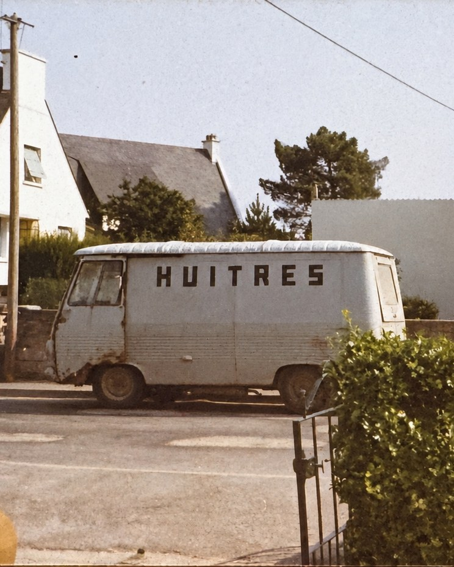
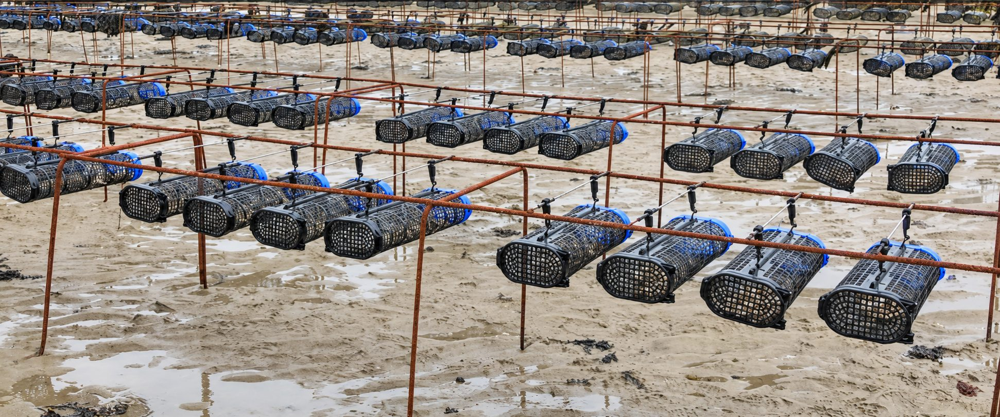
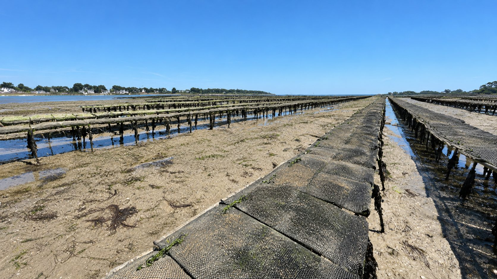
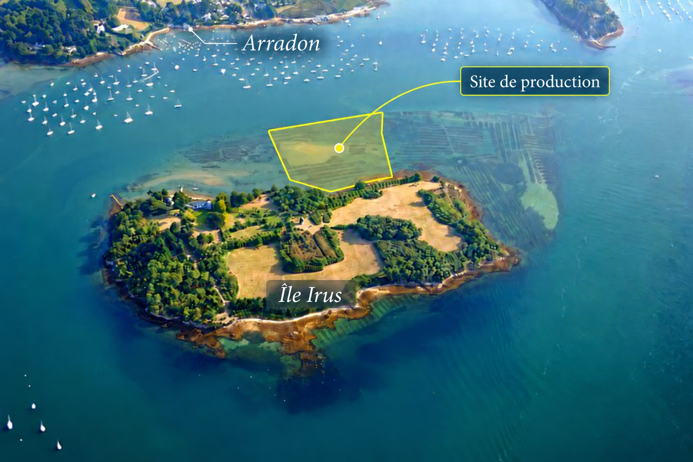

Huîtres & Coquillages Le Guennec
Huîtres de Bretagne Sud, vendues en direct depuis 1930
Un savoir-faire transmis depuis quatre générations — un lien direct avec nos clients, sur les marchés.
Consultez nos horaires et marchés ci-dessous
Voir les marchés & itinéraires →Notre histoire
Une entreprise familiale, quatre générations d'ostréiculteurs

Notre savoir-faire
Nos sites de production
Nos huîtres creuses sont élevées sur trois sites ostréicoles d'exception en Bretagne Sud (Saint-Philibert, La Trinité-sur-Mer et Arradon), puis triées et affinées dans notre chantier de Crac'h.

Baie de Quiberon — Saint-Philibert
Notre premier site dans la Baie de Quiberon, Saint-Philibert, exposé aux courants du large.

Baie de Quiberon — La Trinité-sur-Mer
Notre second site dans la Baie de Quiberon, à La Trinité-sur-Mer.

Golfe du Morbihan — Arradon
Site d'élevage au pied de l'île d'Irus à Arradon, aux eaux abritées et riches.
Nos outils de travail
Un chaland et un chantier taillés pour l'artisanat

- 1 chaland aluminium de 11 mètres et un manitou, pour le travail et la récolte sur nos parcs
- 1 chantier de production à Crac'h : chaîne de tri, calibrage et bassins de purification intérieurs et extérieurs
Commandes spéciales
Vos événements, sur mesure
Nous préparons des commandes adaptées à toutes vos occasions.
- Mariages
- Anniversaires
- Fêtes de famille
- Comités d'entreprise
- Événements professionnels et associatifs
Une commande spéciale ?
Pour toute demande, le plus simple reste de nous appeler directement. Livraison possible sur demande, selon disponibilité et trajet.
Appeler pour organiser ma commandeQuestions fréquentes
Vous vous posez des questions ?
Tout ce qu'il faut savoir avant de venir nous voir sur les marchés ou au chantier.
Où et quand puis-je acheter vos huîtres et coquillages ?
Vous pouvez nous retrouver sur les marchés de Crac'h (jeudi, 7 h 30 – 13 h), Ploërmel (vendredi, 7 h – 13 h), Rennes – Place des Lices (samedi, 5 h – 13 h 30), Pluneret et Saint-Avé (dimanche, 7 h – 13 h). Notre chantier à Crac'h est aussi ouvert du lundi au mercredi de 8 h 30 à 18 h, et le jeudi de 8 h 30 à 12 h.
Quels types d'huîtres proposez-vous ?
Nous élevons des huîtres creuses fines, médaillées d'Or en 2019 au Concours Général Agricole de Paris, ainsi que des huîtres creuses spéciales, élevées en casier australien et médaillées d'Argent la même année.
Proposez-vous des commandes pour les événements et réceptions ?
Oui, tout à fait ! Nous préparons vos commandes sur demande pour tous vos événements, fêtes de famille et réceptions. N'hésitez pas à nous contacter à l'avance pour planifier vos plateaux.
Comment puis-je vous contacter pour passer une commande ?
Vous pouvez nous joindre par téléphone au 06 61 73 74 23 ou au 07 82 45 73 53. Nous sommes également réactifs sur nos pages Facebook et Instagram.
D'où viennent vos huîtres ?
Nos huîtres sont élevées avec passion dans le Morbihan, en Baie de Quiberon ainsi que dans le Golfe du Morbihan grâce à notre parc situé à Arradon. Forts de 4 générations de savoir-faire à Crac'h, nous privilégions la qualité en vente directe.
Vos huîtres sont-elles médaillées ou reconnues ?
Absolument ! Nos huîtres fines ont remporté la Médaille d'Or 2019 et nos huîtres spéciales, élevées en casier australien, la Médaille d'Argent 2019, au Concours Général Agricole de Paris.
Quels sont les horaires d'ouverture de votre chantier à Crac'h ?
Notre site situé au 64 Kersolard à Crac'h est ouvert du lundi au mercredi de 8 h 30 à 18 h, et le jeudi de 8 h 30 à 12 h. Du vendredi au dimanche, le chantier est fermé : retrouvez-nous sur nos marchés locaux.
Livrez-vous ou vendez-vous en dehors des marchés ?
Nous privilégions la vente directe sur les marchés et à notre chantier de Crac'h. Pour toute commande spéciale ou événement dans le secteur, contactez-nous au 06 61 73 74 23 ou au 07 82 45 73 53.
Toute l'équipe Huîtres et Coquillages Le Guennec vous remercie de votre confiance et de votre fidélité ! Que ce soit sur les marchés ou au chantier, nous sommes toujours heureux de partager avec vous la passion de notre métier.
Contact
Venez à notre rencontre
Sur les marchés, ou directement à notre chantier de Crac'h.
Adresse
64 Kersolard, 56950 Crac'h
Bretagne Sud, France
- Lundi – Mercredi : 8 h 30 – 18 h
- Jeudi : 8 h 30 – 12 h
- Vendredi – Dimanche :
Retrouvez-nous sur les marchés
Réseaux sociaux
Huîtres & Coquillages Le Guennec — Facebook & Instagram